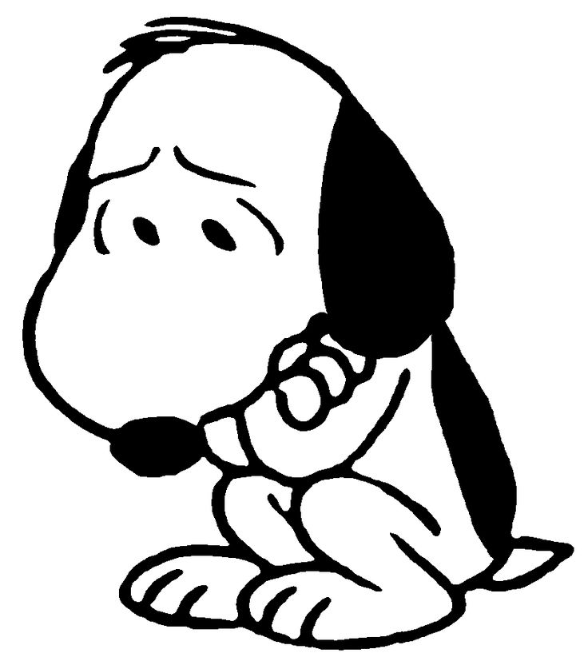
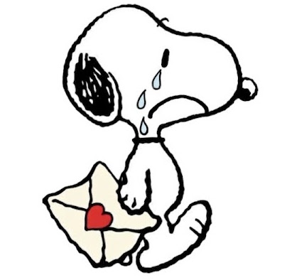

¡Ábrelo!




Hoy no quiero escribirte para hablar de lo malo, ni para recordar nuestras discusiones, nuestros errores o todo aquello que alguna vez nos hizo daño. Hoy quiero escribirte para celebrar algo que, a pesar de todo, siempre voy a considerar especial: nuestro año juntos.
Un año de conocernos, de descubrirnos poco a poco, de compartir momentos que quizá para otras personas no significarían mucho, pero que para mí significaron muchísimo. Un año de amistad, de cariño, de romance, de risas, de conversaciones interminables, de momentos bonitos y también de momentos difíciles que, de una u otra manera, nos hicieron crecer.
Me quedo con la Sully que conocí, con aquella persona que logró hacerme sentir cosas que nunca había sentido. Me quedo con nuestras conversaciones, nuestras bromas, nuestras ocurrencias, nuestras pequeñas cosas y todos esos recuerdos que hicieron que este año fuera diferente a cualquier otro.
Y aunque nuestra historia no terminó como alguna vez imaginamos, eso no significa que haya sido un desperdicio.
Al contrario.
Fue uno de los capítulos más importantes de mi vida.
Durante este año aprendí lo que significa querer realmente a alguien, aprendí que una relación no solamente está hecha de momentos perfectos, sino también de aprender, equivocarse, perdonar, escuchar y crecer. Quizá nosotros todavía no sabíamos hacer muchas de esas cosas, pero lo intentamos. Y por eso también quiero agradecerte.
Gracias por haber sido mi amiga, mi compañera y, durante un tiempo, la persona que ocupó un lugar enorme en mi corazón. Gracias por todas las veces que estuviste ahí, por las risas, por las conversaciones, por los momentos que me hiciste feliz y por permitirme formar parte de tu vida.
Si pudiera volver al inicio y vivir este año otra vez, sabiendo cómo terminaría, probablemente aun así lo viviría.
Porque conocerte valió la pena.
Hoy quiero despedirme sin borrar lo que fuimos. No quiero convertir este año en algo triste solamente porque llegó a su final. Quiero recordarlo como lo que fue: un año que tuvo momentos hermosos y que siempre tendrá un lugar especial en mi memoria.
Tal vez nuestros caminos ahora tengan que separarse. Tal vez con el tiempo seamos solamente un recuerdo el uno para el otro. Y aunque decirlo duele, también entiendo que algunas personas llegan a nuestra vida para quedarse y otras llegan para enseñarnos algo que llevaremos con nosotros.
Tú fuiste ambas cosas: alguien que quise muchísimo y alguien de quien aprendí muchísimo.
Así que no quiero terminar esta carta con un "adiós" lleno de tristeza.
Quiero terminarla diciendo:
Gracias por este año, Sully.
Gracias por cada momento, por cada risa, por cada recuerdo y por haber formado parte de una etapa tan importante de mi vida.
Ojalá algún día, cuando recuerdes este año, puedas hacerlo con una sonrisa y no solamente con tristeza. Yo intentaré hacer lo mismo.
Espero que la vida te lleve a lugares bonitos, que cumplas cada uno de tus sueños y que encuentres todo aquello que buscas.
Y si algún día miras hacia atrás y recuerdas a aquel chico con el que compartiste un año de tu vida, espero que recuerdes que, aunque no fue perfecto, te quiso de verdad y siempre estará agradecido por haberte conocido.
Y siempre recordaré este día 23 de agosto como el día que conocí la indicada, la chica de mi corazón, el amor de mi vida. Y así como llegó el 23 de agosto, se va un 23 de agosto.
Y gracias, Sully.
Por todo lo que fuimos.
Por todo lo que vivimos.
Y espero logres tener una familia y 4 hijos con el hombre que quieras y ames.
Y por ese pequeño pedazo de nuestras vidas que, aunque hoy termine, siempre será nuestro. ❤️